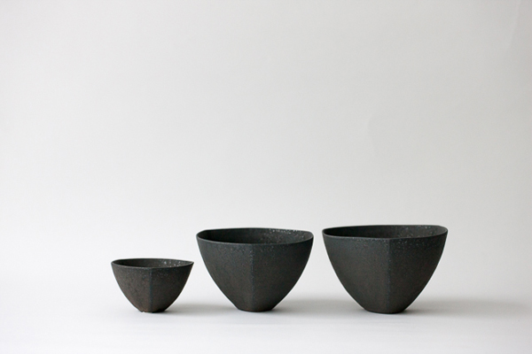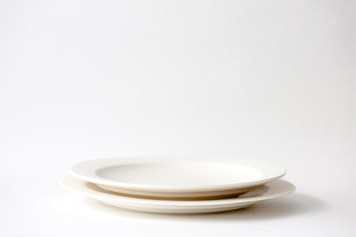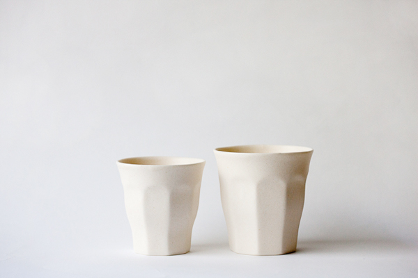
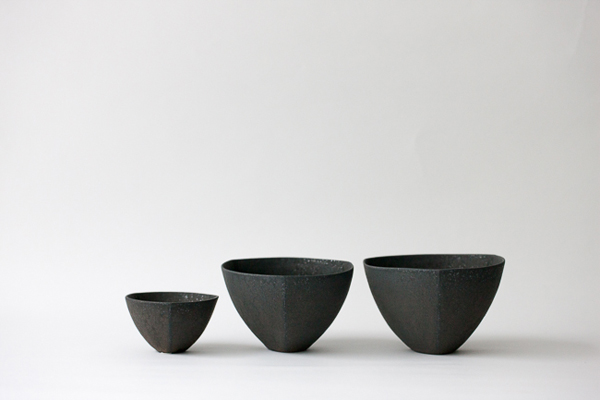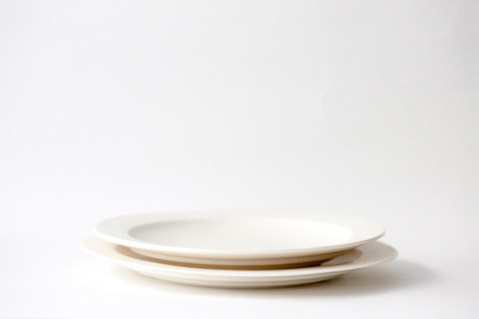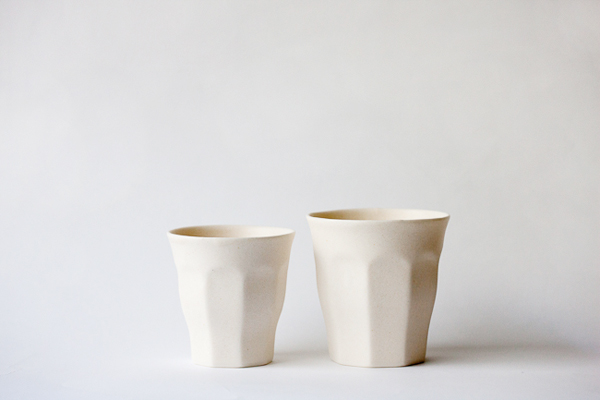- 青木良太 Ryota Aoki陶芸
-
1978
2002
2004
2009
2010富山県生まれ。
岐阜県多治見市陶磁器意匠研究所卒業、土岐市にスタジオを持つ。
Ecole de decoratifs (geneve) に研修生として招かれる。
国内外で18個展を開催。
東京、大阪、名古屋、札幌、倉敷など、全国で個展を開催している。
 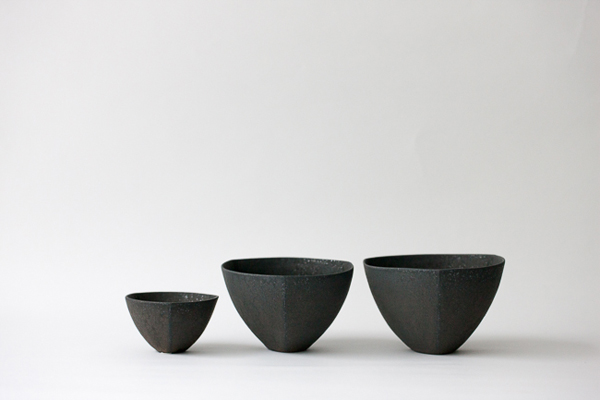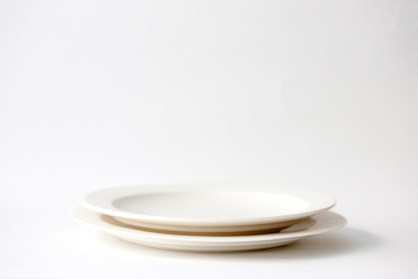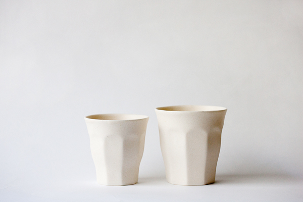
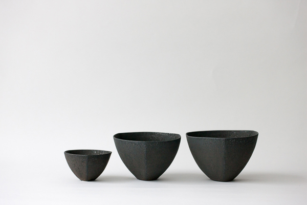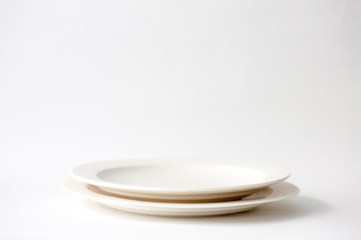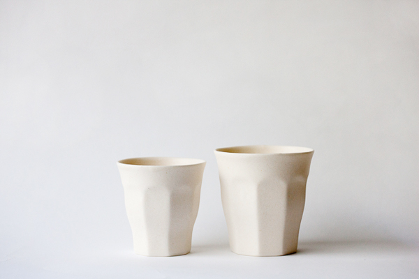1978
2002
2004
2009
2010
富山県生まれ。
岐阜県多治見市陶磁器意匠研究所卒業、土岐市にスタジオを持つ。
Ecole de decoratifs (geneve) に研修生として招かれる。
国内外で18個展を開催。
東京、大阪、名古屋、札幌、倉敷など、全国で個展を開催している。